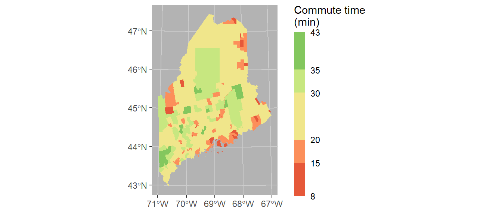

30 Mapping variables
| sf | ggplot2 | tmap | dplyr | stringr | maps |
|---|---|---|---|---|---|
| 1.0.9 | 3.4.0 | 3.3.3 | 1.0.10 | 1.5.0 | 3.4.1 |
Variables can be mapped in R using packages such as ggplot2 and tmap. The focus of this tutorial will be on mapping polygon (aka areal) data. For more information on mapping spatial data (both vector and raster) visit the GIS and Spatial Analysis pages.
30.1 Loading a sample dataset
The following chunk loads a spatial dataset that is in an sf spatial format. The data represent the 2018 census tracts for the state of Maine (USA).
library(sf)
shp <- readRDS(gzcon(url("https://github.com/mgimond/ES218/blob/gh-pages/Data/maine_tracts.Rds?raw=true")))This next chunk is a data table of the average commute time (in minutes) for each Maine census tract.
dat <- read.csv("http://mgimond.github.io/ES218/Data/maine_commute.csv")30.2 Joining a table to a spatial object
Many mapping operations require that the data table be joined to an already created spatial dataset. If your data are aggregated at some administrative boundary level, you can find boundary files for most countries (and at different aggregate levels) in an sf format at https://gadm.org/.
Here, we’ll join the dat table to the shp spatial object using Geo_FIPS as the common key.
library(dplyr)
shp2 <- left_join(shp, dat, by = "Geo_FIPS")30.3 Mapping the data
There are at least two mapping solutions in R: ggplot2 and tmap. Examples using both mapping environments follow.
30.3.1 Mapping with ggplot2
The ggplot grammar is no different here from what you’ve learned earlier in the course. We simply make use of the geom_sf() function to generate the map.
library(ggplot2)
ggplot(shp2) + geom_sf(aes(fill = Commute)) The commute time variable, commute, is mapped to the map’s fill aesthetic. You can overcome many of the plot features’ default behavior. For example, you can bin the color schemes by assigning ranges of commute time values to a unique set of color swatches using one of the scale_fill_steps* family of functions. You can also remove the border colors by setting col = NA. This is demontrated next.
ggplot(shp2) + geom_sf(aes(fill = Commute), col = NA) +
scale_fill_stepsn(colors = c("#D73027", "#FC8D59", "#FEE08B",
"#D9EF8B", "#91CF60", "#1A9850") ,
breaks = c(5, 15, 20, 30, 35))Here, we make use of hex defined colors. Note that you can use the built-in color names or the rgb() function to define the palette colors.
It might help to darken the background panel using the theme function. We’ll assign the grey70 color to the background and grey80 to the grid lines.
ggplot(shp2) + geom_sf(aes(fill = Commute), col = NA) +
scale_fill_stepsn(colors = c("#D73027", "#FC8D59", "#FEE08B",
"#D9EF8B", "#91CF60", "#1A9850") ,
breaks = c(5, 15, 20, 30, 35)) +
theme(panel.grid = element_line(color = "grey80"),
panel.background = element_rect(fill = "grey70"))Coordinate systems can play an important role in both analyzing and visualizing spatial data. If you want to control the coordinate system used in your map, add the coord_sf function. Here we’ll adopt a UTM NAD83 Zone 19N coordinate system using its EPSG code of 26919. Note that the grid axes will still adopt the lat/long designation.
ggplot(shp2) + geom_sf(aes(fill = Commute), col = NA) +
coord_sf(crs = 26919) +
scale_fill_stepsn(colors = c("#D73027", "#FC8D59", "#FEE08B",
"#D9EF8B", "#91CF60", "#1A9850") ,
breaks = c(5, 15, 20, 30, 35)) +
theme(panel.grid = element_line(color = "grey80"),
panel.background = element_rect(fill = "grey70"))
Finally, we’ll modify the bin intervals by generating a non-uniform classification scheme. As such we’ll scale the legend bar so as to reflect the non-uniform intervals using the guide_coloursteps() function and its even.steps = FALSE argument (note that this feature is only available in ggplot2 ver 3.3 or greater). We’ll also modify the legend bar dimensions and title.
ggplot(shp2) + geom_sf(aes(fill = Commute), col = NA) +
coord_sf(crs = 26919) +
scale_fill_stepsn(colors = c("#D73027", "#FC8D59", "#FEE08B",
"#D9EF8B", "#91CF60", "#1A9850") ,
breaks = c(5, 15, 20, 30, 35),
values = scales::rescale(c(5, 15, 20, 30, 35), c(0,1)),
guide = guide_coloursteps(even.steps = FALSE,
show.limits = TRUE,
title = "Commute time \n(min)",
barheight = unit(2.3, "in"),
barwidth = unit(0.15, "in"))) +
theme(panel.grid = element_line(color = "grey80"),
panel.background = element_rect(fill = "grey70"))
30.3.2 Mapping with tmap
While ggplot2 can handle basic mapping operations, it does not offer the ease and flexibility of the tmap package. Much like ggplot2, tmap adopts the same layering strategy. For example, to construct the above plot we first specify the layer to plot via the call to tm_shape, then the geometry to symbolize the spatial feature, tm_fill().
library(tmap)
tm_shape(shp2) + tm_fill(col = "Commute")
To change the projection, pass the PROJ4 string to the projection parameter. To move the legend box outside of the map, set tm_legend(outside = TRUE).
tm_shape(shp2, projection = 26919) +
tm_fill(col = "Commute") +
tm_legend(outside = TRUE)
You can also modify the classification breaks and colors. For example, to break the values following quantiles, and assigning the same color scheme used with the ggplot output in an earlier code chunk, you would write:
tm_shape(shp2, projection = 26919) +
tm_fill(col = "Commute", n = 6, style = "quantile",
palette = c("#D73027", "#FC8D59", "#FEE08B",
"#D9EF8B", "#91CF60", "#1A9850")) +
tm_legend(outside = TRUE)
To explore additional mapping options with tmap Click here.
30.4 Another example
In this section we explore a more complicated workflow that requires additional data manipulation steps to allow a proper join between US counties and Census data.
First, we’ll load the cnty spatial object to your current session environment.
library(sf)
load(url("https://github.com/mgimond/ES218/blob/gh-pages/Data/counties48.RData?raw=true"))Next, we’ll plot the data. Since the data spans the continental US, we’ll change the projection to an equal area projection. This projection will be defined using a string (ea object)–note that a string is another way to define a projection. To learn more about defining projections in R, click here.
Since we have no polygons to fill just yet, we’ll simply draw the outline using tm_polygons()
# Define the projection using PROJ4 syntax
ea <- "+proj=laea +lat_0=45 +lon_0=-100 +x_0=0
+y_0=0 +a=6370997 +b=6370997 +units=m +no_defs"
# Draw the map
tm_shape(cnty, projection = ea) +
tm_polygons() +
tm_layout(outer.margins = c(.1,.1,.1,.1))
30.5 Joining tables to spatial objects
In the examples that follow, you will learn how to join census income data to a spatial object in one of two ways: First, by state and county names; Then, by FIPS (Federal Information Processing Standards) ids.
30.5.1 Joining income table to the map by county and state names
We will use the income-by-gender-education dataset used earlier in the course and limit the data to median income per person (B20004001 column).
library(dplyr)
df <- read.csv("http://mgimond.github.io/ES218/Data/Income_education.csv")
df1 <- df %>% select(subregion = County, region = State, B20004001 )Next, we need to join the census data to the county map using two columns: state name and county name (or region and subregion columns). Let’s compare the two dataframes by viewing the first few rows of each.
head(cnty)Simple feature collection with 6 features and 1 field
Geometry type: MULTIPOLYGON
Dimension: XY
Bounding box: xmin: -88.01778 ymin: 30.24071 xmax: -85.06131 ymax: 34.2686
Geodetic CRS: WGS 84
ID geometry
1 alabama,autauga MULTIPOLYGON (((-86.50517 3...
2 alabama,baldwin MULTIPOLYGON (((-87.93757 3...
3 alabama,barbour MULTIPOLYGON (((-85.42801 3...
4 alabama,bibb MULTIPOLYGON (((-87.02083 3...
5 alabama,blount MULTIPOLYGON (((-86.9578 33...
6 alabama,bullock MULTIPOLYGON (((-85.66866 3...head(df1) subregion region B20004001
1 Autauga al 35881
2 Baldwin al 31439
3 Barbour al 25201
4 Bibb al 29016
5 Blount al 32035
6 Bullock al 26408We note two problems. First, the cnty object encodes states using their full name and not their two letter abbreviation. Second, the county names in cnty are in all lower case. Before attempting to join the dataframes, we must first fix these discrepancies. We will choose to modify df so that its state and county names match those in the cnty (map) dataframe.
We will first create a state name/abbreviation look-up table using the built-in state.name and state.abb objects. Note that using these pre-existing objects will require that we add the District of Columbia to the table since it’s not present in either data objects.
st <- data.frame(region=tolower(state.name), State = tolower(state.abb)) %>%
bind_rows( data.frame(region="district of columbia", State="dc") ) Next, we join the st look-up table to df then make the additional changes needed to join the census data to the counties map. Note that we are overwriting the earlier instance of df1.
df1 <- df %>%
inner_join(st, by="State") %>%
mutate(ID = paste(region,tolower(County), sep = ",")) %>%
select(ID, B20004001 )We can now join df1 to cnty.
cnty.df1 <- inner_join(cnty, df1, by="ID" )Now let’s map the income distribution.
tm_shape(cnty.df1) + tm_fill(col = "B20004001", palette = "Greens") +
tm_legend(outside = TRUE) 
You may notice that the counties map does not seem complete; most notable is the absence of all Louisiana counties. Let’s look at the rows in cnty.df1 associated with the state of Louisiana.
library(stringr)
table(str_detect(cnty.df1$ID, "louisiana") )
FALSE
2971 There are no rows returned (i.e. all cases returned FALSE). This suggests that the Louisiana counties did not properly join. Let’s compare the Louisiana county names between df1 and cnty.
df1 %>% filter(str_detect(ID, "louisiana")) %>% head() ID B20004001
1 louisiana,acadia parish 28678
2 louisiana,allen parish 29870
3 louisiana,ascension parish 43464
4 louisiana,assumption parish 34269
5 louisiana,avoyelles parish 26483
6 louisiana,beauregard parish 33983cnty %>% filter(str_detect(ID, "louisiana")) %>% head()Simple feature collection with 6 features and 1 field
Geometry type: MULTIPOLYGON
Dimension: XY
Bounding box: xmin: -93.74163 ymin: 29.62765 xmax: -90.63619 ymax: 31.35225
Geodetic CRS: WGS 84
ID geometry
1 louisiana,acadia MULTIPOLYGON (((-92.61863 3...
2 louisiana,allen MULTIPOLYGON (((-92.5957 30...
3 louisiana,ascension MULTIPOLYGON (((-91.12894 3...
4 louisiana,assumption MULTIPOLYGON (((-91.23207 3...
5 louisiana,avoyelles MULTIPOLYGON (((-92.32642 3...
6 louisiana,beauregard MULTIPOLYGON (((-93.12856 3...It turns out that Louisiana does not divide its administrative areas into counties but parishes instead. The income data (originally downloaded from the Census Bureau) follows through with that designation convention by adding the word “parish” to each of its administrative area names. We therefore need to remove all instances of parish in the subregion names associated with Louisiana. We will therefore need to recreate the df1 object as follows:
library(stringr)
df1 <- df %>%
inner_join(st, by="State") %>%
mutate(ID = paste(region,tolower(County), sep = ","),
ID = ifelse(region=="louisiana",
str_replace(ID, " parish", ""), ID)) %>%
select(ID, B20004001 )Let’s re-join the dataframes and re-plot the map.
cnty.df1 <- inner_join(cnty, df1, by="ID" )
tm_shape(cnty.df1) + tm_fill(col = "B20004001", palette = "Greens") +
tm_legend(outside = TRUE) 
Most of Louisiana’s parishes are now mapped, but we are still missing a few parishes as well as a few counties. This is a result of differences in spelling for two-word county and parish names. For example, df1 encodes St. Lucie county (Florida) as st. lucie whereas cnty omits the dot and encodes it as st lucie. Fixing these discrepancies will require additional labor. At this point, it may prove more fruitful to do away with state/county names as joining keys and use FIPS county codes instead.
FIPS (Federal Information Processing Standards) codes assign each county/state a unique five number designation thus making it easier to join data to spatial features. However, neither our census data table nor the built-in counties map have FIPS codes. We will download another version of the income data (one that has FIPS codes). Note that FIPS codes are normally part of datasets provided by the Census Bureau. The maps package has a dataset called county.fips that can be used to match state/county names in the county map to FIPS codes.
30.5.2 Joining income table by FIPS code
Let’s download the FIPS version of the dataset. Note that we will not need to modify/add columns to the data since we will be joining this table to the county map using the FIPS code.
df <- read.csv("http://mgimond.github.io/ES218/Data/Income_education_with_FIPS.csv")
df1 <- df %>% select(FIPS, B20004001 )Next, we’ll load the county.fips dataset from the maps package.
# Load the county.fips dataset
county.fips <- maps::county.fips
head(county.fips) fips polyname
1 1001 alabama,autauga
2 1003 alabama,baldwin
3 1005 alabama,barbour
4 1007 alabama,bibb
5 1009 alabama,blount
6 1011 alabama,bullockcnty2 <- cnty %>%
left_join(county.fips, by=c("ID" = "polyname"))Now that the FIPS codes are part of the county map dataframe, let’s join the income data table to the county map, then map the income values.
cnty2.df1 <- inner_join(cnty2, df1, by=c("fips" = "FIPS") )
tm_shape(cnty2.df1) + tm_fill(col = "B20004001", palette = "Greens") +
tm_legend(outside = TRUE) 
This is an improvement over the last map. But there are still a few counties missing. After a closer scrutiny of the data, it seems that the county.fips table splits some counties into two or more sub-regions. For example, Accomack county (Virginia) is split into two regions (and thus into two different names):
county.fips %>% filter(str_detect(polyname, "virginia,accomack")) fips polyname
1 51001 virginia,accomack:main
2 51001 virginia,accomack:chincoteagueFixing these discrepancies would require manual intervention and time. Another work around is to use the Census Bureau’s map files instead of maps’s built-in map. We will cover this in the next section.
30.6 Working with external GIS files
30.6.1 Reading a shapefile into R
The Census Bureau maintains its own library of administrative boundary shapefiles (shapefiles are popular map data formats). This may prove to be the best map source to use since its areal units are designed to match the records in the income data table. Loading a shapefile can easily be accomplished using the st_read() function from the sf package. One option is to download the shapefile from the Census Bureau’s website (usually in a zipped format) then unpack it in a local project folder before reading it into the current session with st_read(). But we can maximize the replicability of the workflow by writing a chunk of code that will download the zipped shapefile into a temporary directory before unzipping it and loading the shapefile into an active R session as shown below.
library(sf)
tmp <- tempdir()
link <- "http://www2.census.gov/geo/tiger/GENZ2010/gz_2010_us_050_00_20m.zip"
filename <- basename(link)
download.file(link, filename)
unzip(filename, exdir = tmp )
shapefile <- st_read(dsn = tmp, layer = tools::file_path_sans_ext(filename))Reading layer `gz_2010_us_050_00_20m' from data source `C:\Users\mgimond\AppData\Local\Temp\RtmpgfvWMf' using driver `ESRI Shapefile'
Simple feature collection with 3221 features and 6 fields
Geometry type: MULTIPOLYGON
Dimension: XY
Bounding box: xmin: -179.1473 ymin: 17.88481 xmax: 179.7785 ymax: 71.35256
Geodetic CRS: NAD83The shapefile is unzipped into a temporary folder, tmp, then read from that same directory and stored in an sf object called shapefile. The code tools::file_path_sans_ext(filename) extracts the name of the zip file (minus the extension) which turns out to also be the name of the shapefile. Note that if the zip file was manually unpacked in a project folder then the only command that would have needed to be executed is the st_read function as in st_read("gz_2010_us_050_00_20m.shp" ).
The Census shapefile has a field called GEO_ID that includes the county FIPS codes along with other superfluous county ID values. We only need the last five digit county FIPS code so we’ll extract these codes into a new column called FIPS.
shapefile$FIPS <- as.numeric(str_sub(shapefile$GEO_ID, 10, 14))Next we can append the income table to the shapefile object.
cnty2.cs <- shapefile %>%
inner_join(df1, by="FIPS")Now, we can plot the income distribution map. Note that the Census Bureau shapefile includes the 48 states, Alaska and Hawaii. If you want to limit the extent to the 48 states, define the boundary limits using the bbox parameter in the tm_shape function.
tm_shape(cnty2.cs,
bbox = st_bbox(c(xmin = -125, xmax = -67 , ymin = 25, ymax = 50))) +
tm_fill(col = "B20004001", palette = "Greens", title = "Income") +
tm_legend(outside = TRUE) 
30.6.2 Modifying the color scheme
The classification scheme can be customized. For example, to split the income values across six intervals (e.g. $0 to $20000, $20000 to $30000, $30000 to $50000, and $50000 to $100000) and to label the values as dollars, type the following:
tm_shape(cnty2.cs,
bbox = st_bbox(c(xmin = -125, xmax = -67 , ymin = 25, ymax = 50))) +
tm_fill(col = "B20004001", palette = "Greens",
style="fixed", breaks=c(0, 20000 , 30000, 50000, 100000 ),
labels = c("under $20k", "$20k - $30k", "$30k - $50k", "above $50k"),
title = "Income") +
tm_legend(outside = TRUE) 
We might choose to map the income distribution using a divergent color scheme where we compare the counties to some overall value such as the counties’ median income value. We can use the quantile() function to break the income data into its percentiles. This will be helpful in generating symmetrical intervals about the median.
inc.qt <- quantile(df1$B20004001, probs = c(0, 0.125, .25, 0.5, .75, .875 , 1 ))A divergent color scheme consists of two different hues whose lightness values converge towards some central value (the median income in our case). We’ll use a red-to-green color palette, RdYlGn, for this next map where red hues highlight counties below the county median income and green hues highlight counties above the county median value.
tm_shape(cnty2.cs,
bbox = st_bbox(c(xmin = -125, xmax = -67 , ymin = 25, ymax = 50))) +
tm_fill(col = "B20004001", palette = "RdYlGn",
style="fixed", breaks = inc.qt,
title = "Income") +
tm_legend(outside = TRUE) 
The divergent map gives us a different handle on the data. Here, we can identify the poorer than average counties such as the southeast and parts of the Mississippi river region as well as the wealthier counties such as the mid-Atlantic region and the west coast.